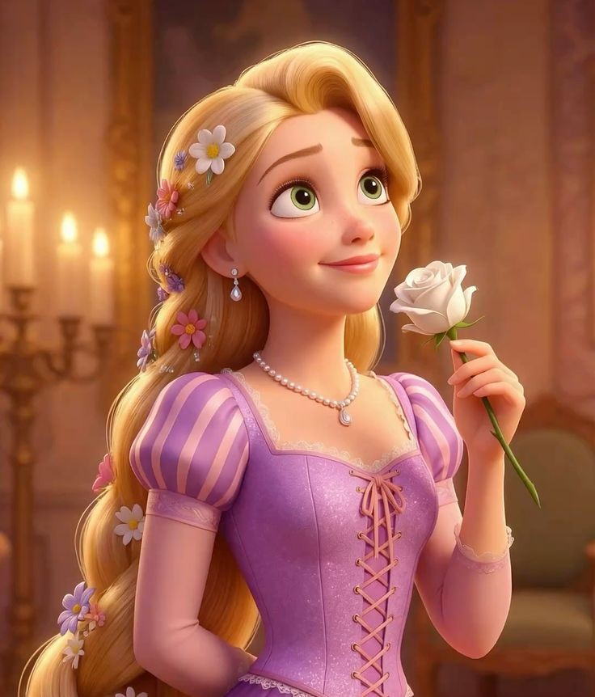
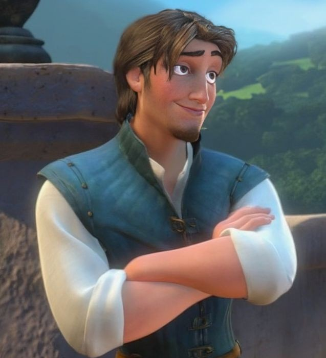
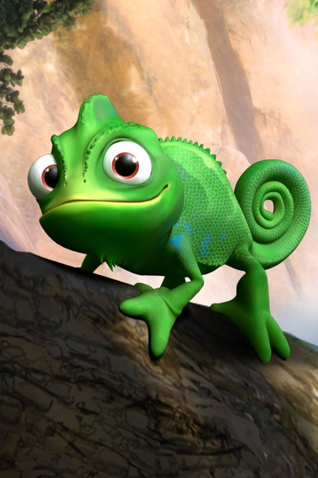

Tangled
Tangled adalah film animasi Disney yang menceritakan kisah seorang gadis bernama Rapunzel. Ia memiliki rambut panjang dengan kekuatan ajaib dan selama bertahun-tahun tinggal di sebuah menara yang jauh dari dunia luar.
Rapunzel kemudian bertemu dengan Flynn Rider, seorang pencuri yang tidak sengaja masuk ke menaranya. Pertemuan tersebut menjadi awal perjalanan mereka untuk menjelajahi dunia luar dan menemukan berbagai hal baru.
Dalam perjalanan tersebut, Rapunzel mulai mengenal arti kebebasan, keberanian, persahabatan, dan keluarga. Ia juga belajar untuk berani menentukan jalan hidupnya sendiri.
🎬 Tahun: 2010
🎭 Genre: Animasi, Petualangan, Komedi
👧 Tokoh utama: Rapunzel
🏰 Studio: Walt Disney Animation Studios
Karakter Utama

Rapunzel
Gadis pemberani dengan rambut ajaib yang memiliki rasa ingin tahu besar terhadap dunia luar.

Flynn Rider
Seorang pencuri yang awalnya hanya memikirkan dirinya sendiri, tetapi kemudian menjadi teman dan pendamping Rapunzel.

Pascal
Bunglon kecil yang menjadi sahabat setia Rapunzel dan selalu menemaninya.
Pesan dari Tangled 🌷
Film Tangled mengajarkan bahwa kita harus berani keluar dari zona nyaman dan mencoba hal-hal baru. Selain itu, film ini juga menunjukkan pentingnya keberanian, persahabatan, kebebasan, dan mempercayai diri sendiri.